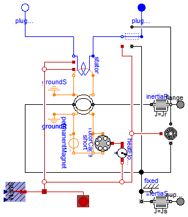
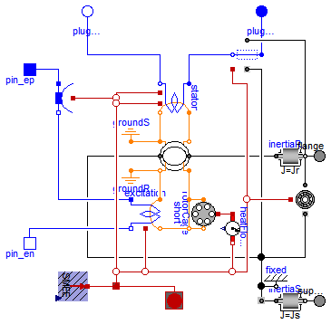
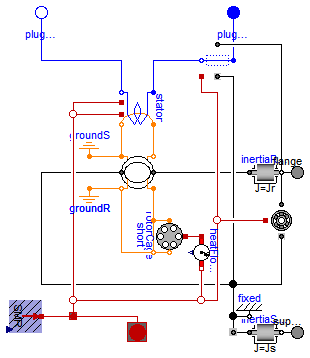

This package contains various synchronous induction machine models.
Extends from Modelica.Icons.VariantsPackage (Icon for package containing variants).
| Name | Description |
|---|---|
| SM_PermanentMagnet | Permanent magnet synchronous machine with optional damper cage |
| SM_ElectricalExcited | Electrical excited synchronous machine with optional damper cage |
| SM_ReluctanceRotor | Reluctance machine with optional damper cage |

Resistances and stray inductances of the machine refer to the stator phases. The symmetry of the stator is assumed. For rotor asymmetries can be taken into account by different resistances and stray inductances in the d- and q-axis. The machine models take the following loss effects into account:
SM_ElectricalExcited, SM_ReluctanceRotor,
Extends from Modelica.Magnetic.FundamentalWave.Interfaces.PartialBasicInductionMachine (Partial model for induction machine).
| Type | Name | Default | Description |
|---|---|---|---|
| Inertia | Jr | Rotor inertia [kg.m2] | |
| Boolean | useSupport | false | Enable / disable (=fixed stator) support |
| Inertia | Js | Stator inertia [kg.m2] | |
| Boolean | useThermalPort | false | Enable / disable (=fixed temperatures) thermal port |
| Integer | p | Number of pole pairs (Integer) | |
| Frequency | fsNominal | Nominal frequency [Hz] | |
| Real | effectiveStatorTurns | 1 | Effective number of stator turns |
| Voltage | VsOpenCircuit | Open circuit RMS voltage per phase @ fsNominal [V] | |
| Operational temperatures | |||
| Temperature | TsOperational | Operational temperature of stator resistance [K] | |
| Temperature | TrOperational | Operational temperature of (optional) damper cage [K] | |
| Nominal resistances and inductances | |||
| Resistance | Rs.start | 0.03 | Stator resistance per phase at TRef [Ohm] |
| Temperature | TsRef | Reference temperature of stator resistance [K] | |
| LinearTemperatureCoefficient20 | alpha20s | Temperature coefficient of stator resistance at 20 degC [1/K] | |
| Inductance | Lssigma.start | 0.1/(2*pi*fsNominal) | Stator stray inductance per phase [H] |
| Inductance | Lszero | Lssigma | Stator zero inductance per phase [H] |
| Inductance | Lmd | Main field inductance, d-axis [H] | |
| Inductance | Lmq | Main field inductance, q-axis [H] | |
| Damper cage | |||
| Boolean | useDamperCage | Enable/disable damper cage | |
| Inductance | Lrsigmad | Rotor leakage inductance, d-axis, w.r.t. stator side [H] | |
| Inductance | Lrsigmaq | Lrsigmad | Rotor leakage inductance, q-axis, w.r.t. stator side [H] |
| Resistance | Rrd | Rotor resistance, d-axis, w.r.t. stator side [Ohm] | |
| Resistance | Rrq | Rrd | Rotor resistance , q-axis, w.r.t. stator side [Ohm] |
| Temperature | TrRef | Reference temperature of damper resistances in d- and q-axis [K] | |
| LinearTemperatureCoefficient20 | alpha20r | Temperature coefficient of damper resistances in d- and q-axis [1/K] | |
| Losses | |||
| FrictionParameters | frictionParameters | Friction losses | |
| CoreParameters | statorCoreParameters | Stator core losses | |
| StrayLoadParameters | strayLoadParameters | Stray load losses | |
| Type | Name | Description |
|---|---|---|
| Flange_a | flange | Shaft |
| Flange_a | support | Support at which the reaction torque is acting |
| PositivePlug | plug_sp | Positive plug of stator |
| NegativePlug | plug_sn | Negative plug of stator |
model SM_PermanentMagnet
"Permanent magnet synchronous machine with optional damper cage"
extends Modelica.Magnetic.FundamentalWave.Interfaces.PartialBasicInductionMachine
(
is(start=zeros(m)),
Rs(start=0.03),
Lssigma(start=0.1/(2*pi*fsNominal)),
final L0(d=2.0*Lmd/3.0/effectiveStatorTurns^2, q=2.0*Lmq/3.0/effectiveStatorTurns^2),
redeclare final Modelica.Electrical.Machines.Thermal.SynchronousInductionMachines.ThermalAmbientSMPM
thermalAmbient(final useDamperCage = useDamperCage, final Tr=TrOperational),
redeclare final Modelica.Electrical.Machines.Interfaces.InductionMachines.ThermalPortSMPM
thermalPort(final useDamperCage = useDamperCage),
redeclare final Modelica.Electrical.Machines.Interfaces.InductionMachines.ThermalPortSMPM
internalThermalPort(final useDamperCage = useDamperCage),
redeclare final Modelica.Electrical.Machines.Interfaces.InductionMachines.PowerBalanceSMPM
powerBalance(final lossPowerRotorWinding = heatFlowSensorDamperCage.Q_flow,
final lossPowerRotorCore = 0,
final lossPowerPermanentMagnet = 0));
parameter Modelica.SIunits.Inductance Lmd(start=0.3/(2*pi*fsNominal))
"Main field inductance, d-axis";
parameter Modelica.SIunits.Inductance Lmq(start=0.3/(2*pi*fsNominal))
"Main field inductance, q-axis";
// Rotor cage parameters
parameter Boolean useDamperCage(start=true) "Enable/disable damper cage";
parameter Modelica.SIunits.Inductance Lrsigmad(start=0.05/(2*pi*fsNominal))
"Rotor leakage inductance, d-axis, w.r.t. stator side";
parameter Modelica.SIunits.Inductance Lrsigmaq=Lrsigmad
"Rotor leakage inductance, q-axis, w.r.t. stator side";
parameter Modelica.SIunits.Resistance Rrd(start=0.04)
"Rotor resistance, d-axis, w.r.t. stator side";
parameter Modelica.SIunits.Resistance Rrq=Rrd
"Rotor resistance , q-axis, w.r.t. stator side";
parameter Modelica.SIunits.Temperature TrRef(start=293.15)
"Reference temperature of damper resistances in d- and q-axis";
parameter Modelica.Electrical.Machines.Thermal.LinearTemperatureCoefficient20
alpha20r(start=0)
"Temperature coefficient of damper resistances in d- and q-axis";
parameter Modelica.SIunits.Voltage VsOpenCircuit(start=112.3)
"Open circuit RMS voltage per phase @ fsNominal";
parameter Modelica.SIunits.Temperature TrOperational(start=293.15)
"Operational temperature of (optional) damper cage";
protected
final parameter Modelica.SIunits.MagneticPotentialDifference V_mPM=
(2/pi)*sqrt(2)*(m/2)*VsOpenCircuit/effectiveStatorTurns/(Lmd/effectiveStatorTurns^2*2*pi*fsNominal)
"Equivalent excitation magnetic potential difference";
public
Modelica.Magnetic.FundamentalWave.Components.Ground groundR
"Ground of rotor magnetic circuit";
Modelica.Magnetic.FundamentalWave.Components.Short short if not
useDamperCage "Magnetic connection in case the damper cage is not present";
Modelica.Magnetic.FundamentalWave.BasicMachines.Components.SaliencyCageWinding
rotorCage(
final RRef(d=Rrd, q=Rrq),
final Lsigma(d=Lrsigmad, q=Lrsigmaq),
final effectiveTurns=sqrt(3.0/2.0)*effectiveStatorTurns,
final useHeatPort=true,
final TRef=TrRef,
final alpha20=alpha20r,
final TOperational=TrOperational) if
useDamperCage
"Symmetric rotor cage winding including resistances and stray inductances";
Modelica.Magnetic.FundamentalWave.Sources.ConstantMagneticPotentialDifference
permanentMagnet(final V_m=Complex(V_mPM, 0))
"Magnetic potential difference of permanent magnet";
Modelica.Thermal.HeatTransfer.Sensors.ConditionalFixedHeatFlowSensor
heatFlowSensorDamperCage(final useFixedTemperature=not useDamperCage);
equation
connect(permanentMagnet.port_p, airGap.port_rn);
connect(permanentMagnet.port_n, short.port_n);
connect(permanentMagnet.port_n, rotorCage.port_n);
connect(short.port_p, airGap.port_rp);
connect(rotorCage.port_p, airGap.port_rp);
connect(rotorCage.heatPortWinding, heatFlowSensorDamperCage.port_a);
connect(heatFlowSensorDamperCage.port_b, internalThermalPort.heatPortRotorWinding);
end SM_PermanentMagnet;

The symmetry of the stator is assumed. For rotor asymmetries can be taken into account by different resistances and stray inductances in the d- and q-axis. The machine models take the following loss effects into account:
SM_PermanentMagnet, SM_ReluctanceRotor,
Extends from Modelica.Magnetic.FundamentalWave.Interfaces.PartialBasicInductionMachine (Partial model for induction machine).
| Type | Name | Default | Description |
|---|---|---|---|
| Inertia | Jr | Rotor inertia [kg.m2] | |
| Boolean | useSupport | false | Enable / disable (=fixed stator) support |
| Inertia | Js | Stator inertia [kg.m2] | |
| Boolean | useThermalPort | false | Enable / disable (=fixed temperatures) thermal port |
| Integer | p | Number of pole pairs (Integer) | |
| Frequency | fsNominal | Nominal frequency [Hz] | |
| Real | effectiveStatorTurns | 1 | Effective number of stator turns |
| Operational temperatures | |||
| Temperature | TsOperational | Operational temperature of stator resistance [K] | |
| Temperature | TrOperational | Operational temperature of (optional) damper cage [K] | |
| Temperature | TeOperational | Operational excitation temperature [K] | |
| Nominal resistances and inductances | |||
| Resistance | Rs.start | 0.03 | Stator resistance per phase at TRef [Ohm] |
| Temperature | TsRef | Reference temperature of stator resistance [K] | |
| LinearTemperatureCoefficient20 | alpha20s | Temperature coefficient of stator resistance at 20 degC [1/K] | |
| Inductance | Lssigma.start | 0.1/(2*pi*fsNominal) | Stator stray inductance per phase [H] |
| Inductance | Lszero | Lssigma | Stator zero inductance per phase [H] |
| Inductance | Lmd | Main field inductance, d-axis [H] | |
| Inductance | Lmq | Main field inductance, q-axis [H] | |
| DamperCage | |||
| Boolean | useDamperCage | Enable/disable damper cage | |
| Inductance | Lrsigmad | Rotor leakage inductance, d-axis, w.r.t. stator side [H] | |
| Inductance | Lrsigmaq | Lrsigmad | Rotor leakage inductance, q-axis, w.r.t. stator side [H] |
| Resistance | Rrd | Rotor resistance, d-axis, w.r.t. stator side [Ohm] | |
| Resistance | Rrq | Rrd | Rotor resistance , q-axis, w.r.t. stator side [Ohm] |
| Temperature | TrRef | Reference temperature of damper resistances in d- and q-axis [K] | |
| LinearTemperatureCoefficient20 | alpha20r | Temperature coefficient of damper resistances in d- and q-axis [1/K] | |
| Losses | |||
| FrictionParameters | frictionParameters | Friction losses | |
| CoreParameters | statorCoreParameters | Stator core losses | |
| StrayLoadParameters | strayLoadParameters | Stray load losses | |
| BrushParameters | brushParameters | Brush losses | |
| Excitation | |||
| Voltage | VsNominal | Nominal stator voltage [V] | |
| Current | IeOpenCircuit | Open circuit excitation current @ nominal voltage and frequency [A] | |
| Resistance | Re | Warm excitation resistance [Ohm] | |
| Temperature | TeRef | Reference temperture of excitation resistance [K] | |
| LinearTemperatureCoefficient20 | alpha20e | Temperature coefficient of excitation resistance [1/K] | |
| Real | sigmae | Stray fraction of total excitation inductance | |
| Type | Name | Description |
|---|---|---|
| Flange_a | flange | Shaft |
| Flange_a | support | Support at which the reaction torque is acting |
| PositivePlug | plug_sp | Positive plug of stator |
| NegativePlug | plug_sn | Negative plug of stator |
| PositivePin | pin_ep | Positive pin of excitation |
| NegativePin | pin_en | Negative pin of excitation |
model SM_ElectricalExcited
"Electrical excited synchronous machine with optional damper cage"
extends Modelica.Magnetic.FundamentalWave.Interfaces.PartialBasicInductionMachine
(
is(start=zeros(m)),
Rs(start=0.03),
Lssigma(start=0.1/(2*pi*fsNominal)),
final L0(d=2.0*Lmd/3.0/effectiveStatorTurns^2, q=2.0*Lmq/3.0/effectiveStatorTurns^2),
redeclare final Modelica.Electrical.Machines.Thermal.SynchronousInductionMachines.ThermalAmbientSMEE
thermalAmbient(final useDamperCage = useDamperCage, final Te=TeOperational, final Tr=TrOperational),
redeclare final Modelica.Electrical.Machines.Interfaces.InductionMachines.ThermalPortSMEE
thermalPort(final useDamperCage = useDamperCage),
redeclare final Modelica.Electrical.Machines.Interfaces.InductionMachines.ThermalPortSMEE
internalThermalPort(final useDamperCage = useDamperCage),
redeclare final Modelica.Electrical.Machines.Interfaces.InductionMachines.PowerBalanceSMEE
powerBalance(final lossPowerRotorWinding = heatFlowSensorDamperCage.Q_flow,
final powerExcitation = ve*ie,
final lossPowerExcitation = -excitation.heatPortWinding.Q_flow,
final lossPowerBrush = -brush.heatPort.Q_flow,
final lossPowerRotorCore = 0));
parameter Modelica.SIunits.Inductance Lmd(start=1.5/(2*pi*fsNominal))
"Main field inductance, d-axis";
parameter Modelica.SIunits.Inductance Lmq(start=1.5/(2*pi*fsNominal))
"Main field inductance, q-axis";
// Rotor cage parameters
parameter Boolean useDamperCage(start=true) "Enable/disable damper cage";
parameter Modelica.SIunits.Inductance Lrsigmad(start=0.05/(2*pi*fsNominal))
"Rotor leakage inductance, d-axis, w.r.t. stator side";
parameter Modelica.SIunits.Inductance Lrsigmaq=Lrsigmad
"Rotor leakage inductance, q-axis, w.r.t. stator side";
parameter Modelica.SIunits.Resistance Rrd(start=0.04)
"Rotor resistance, d-axis, w.r.t. stator side";
parameter Modelica.SIunits.Resistance Rrq=Rrd
"Rotor resistance , q-axis, w.r.t. stator side";
parameter Modelica.SIunits.Temperature TrRef(start=293.15)
"Reference temperature of damper resistances in d- and q-axis";
parameter Modelica.Electrical.Machines.Thermal.LinearTemperatureCoefficient20
alpha20r(start=0)
"Temperature coefficient of damper resistances in d- and q-axis";
// Operational temperature
parameter Modelica.SIunits.Temperature TrOperational(start=293.15)
"Operational temperature of (optional) damper cage";
parameter Modelica.SIunits.Temperature TeOperational(start=293.15)
"Operational excitation temperature";
// Excitaiton parameters
parameter Modelica.SIunits.Voltage VsNominal(start=100)
"Nominal stator voltage";
parameter Modelica.SIunits.Current IeOpenCircuit(start=10)
"Open circuit excitation current @ nominal voltage and frequency";
parameter Modelica.SIunits.Resistance Re(start=2.5)
"Warm excitation resistance";
parameter Modelica.SIunits.Temperature TeRef(start=293.15)
"Reference temperture of excitation resistance";
parameter Modelica.Electrical.Machines.Thermal.LinearTemperatureCoefficient20
alpha20e(start=0) "Temperature coefficient of excitation resistance";
parameter Real sigmae(min=0, max=1, start=0.025)
"Stray fraction of total excitation inductance";
parameter Modelica.Electrical.Machines.Losses.BrushParameters
brushParameters "Brush losses";
output Modelica.SIunits.Voltage ve = pin_ep.v-pin_en.v "Excitation voltage";
output Modelica.SIunits.Current ie = pin_ep.i "Excitation current";
protected
final parameter Real turnsRatio = sqrt(2)*VsNominal/(2*pi*fsNominal*Lmd*IeOpenCircuit)
"Stator current / excitation current";
final parameter Modelica.SIunits.Inductance Lesigma = Lmd*turnsRatio^2*3/2 * sigmae/(1-sigmae)
"Leakage inductance of the excitation winding";
public
FundamentalWave.Components.Short short if not useDamperCage
"Magnetic connection in case the damper cage is not present";
Components.SaliencyCageWinding rotorCage(
final Lsigma(d=Lrsigmad, q=Lrsigmaq),
final effectiveTurns=sqrt(3.0/2.0)*effectiveStatorTurns,
final useHeatPort=true,
final TRef=TrRef,
final TOperational=TrOperational,
final RRef(d=Rrd, q=Rrq),
final alpha20=alpha20r) if useDamperCage
"Symmetric rotor cage winding including resistances and stray inductances";
Components.SinglePhaseWinding excitation(
final orientation=0,
final RRef=Re,
final TRef=TeRef,
final Lsigma=Lesigma,
final effectiveTurns=effectiveStatorTurns*turnsRatio*m/2,
final useHeatPort=true,
final TOperational=TeOperational,
final alpha20=alpha20e)
"Excitation winding including resistance and stray inductance";
Modelica.Electrical.Analog.Interfaces.PositivePin pin_ep
"Positive pin of excitation";
Modelica.Electrical.Analog.Interfaces.NegativePin pin_en
"Negative pin of excitation";
Electrical.Machines.Losses.DCMachines.Brush brush(
final brushParameters=brushParameters);
Modelica.Thermal.HeatTransfer.Sensors.ConditionalFixedHeatFlowSensor
heatFlowSensorDamperCage(final useFixedTemperature=not useDamperCage);
equation
connect(short.port_n, rotorCage.port_n);
connect(excitation.port_n, short.port_n);
connect(excitation.port_n, rotorCage.port_n);
connect(pin_en, excitation.pin_n);
connect(airGap.port_rn, excitation.port_p);
connect(airGap.port_rp, short.port_p);
connect(airGap.port_rp, rotorCage.port_p);
connect(pin_ep, brush.p);
connect(brush.n, excitation.pin_p);
connect(brush.heatPort, internalThermalPort.heatPortBrush);
connect(excitation.heatPortWinding, internalThermalPort.heatPortExcitation);
connect(rotorCage.heatPortWinding, heatFlowSensorDamperCage.port_a);
connect(heatFlowSensorDamperCage.port_b, internalThermalPort.heatPortRotorWinding);
end SM_ElectricalExcited;

The symmetry of the stator is assumed. For rotor asymmetries can be taken into account by different resistances and stray inductances in the d- and q-axis. The machine models take the following loss effects into account:
SM_ElectricalExcited, SM_PermanentMagnet,
Extends from Modelica.Magnetic.FundamentalWave.Interfaces.PartialBasicInductionMachine (Partial model for induction machine).
| Type | Name | Default | Description |
|---|---|---|---|
| Inertia | Jr | Rotor inertia [kg.m2] | |
| Boolean | useSupport | false | Enable / disable (=fixed stator) support |
| Inertia | Js | Stator inertia [kg.m2] | |
| Boolean | useThermalPort | false | Enable / disable (=fixed temperatures) thermal port |
| Integer | p | Number of pole pairs (Integer) | |
| Frequency | fsNominal | Nominal frequency [Hz] | |
| Real | effectiveStatorTurns | 1 | Effective number of stator turns |
| Operational temperatures | |||
| Temperature | TsOperational | Operational temperature of stator resistance [K] | |
| Temperature | TrOperational | Operational temperature of (optional) damper cage [K] | |
| Nominal resistances and inductances | |||
| Resistance | Rs.start | 0.03 | Stator resistance per phase at TRef [Ohm] |
| Temperature | TsRef | Reference temperature of stator resistance [K] | |
| LinearTemperatureCoefficient20 | alpha20s | Temperature coefficient of stator resistance at 20 degC [1/K] | |
| Inductance | Lssigma.start | 0.1/(2*pi*fsNominal) | Stator stray inductance per phase [H] |
| Inductance | Lszero | Lssigma | Stator zero inductance per phase [H] |
| Inductance | Lmd | Main field inductance, d-axis [H] | |
| Inductance | Lmq | Main field inductance, q-axis [H] | |
| DamperCage | |||
| Boolean | useDamperCage | Enable/disable damper cage | |
| Inductance | Lrsigmad | Rotor leakage inductance, d-axis, w.r.t. stator side [H] | |
| Inductance | Lrsigmaq | Lrsigmad | Rotor leakage inductance, q-axis, w.r.t. stator side [H] |
| Resistance | Rrd | Rotor resistance, d-axis, w.r.t. stator side [Ohm] | |
| Resistance | Rrq | Rrd | Rotor resistance , q-axis, w.r.t. stator side [Ohm] |
| Temperature | TrRef | Reference temperature of damper resistances in d- and q-axis [K] | |
| LinearTemperatureCoefficient20 | alpha20r | Temperature coefficient of damper resistances in d- and q-axis [1/K] | |
| Losses | |||
| FrictionParameters | frictionParameters | Friction losses | |
| CoreParameters | statorCoreParameters | Stator core losses | |
| StrayLoadParameters | strayLoadParameters | Stray load losses | |
| Type | Name | Description |
|---|---|---|
| Flange_a | flange | Shaft |
| Flange_a | support | Support at which the reaction torque is acting |
| PositivePlug | plug_sp | Positive plug of stator |
| NegativePlug | plug_sn | Negative plug of stator |
model SM_ReluctanceRotor
"Reluctance machine with optional damper cage"
extends Modelica.Magnetic.FundamentalWave.Interfaces.PartialBasicInductionMachine
(
is(start=zeros(m)),
Rs(start=0.03),
Lssigma(start=0.1/(2*pi*fsNominal)),
final L0(d=2.0*Lmd/3.0/effectiveStatorTurns^2, q=2.0*Lmq/3.0/effectiveStatorTurns^2),
redeclare final Modelica.Electrical.Machines.Thermal.SynchronousInductionMachines.ThermalAmbientSMR
thermalAmbient(final useDamperCage = useDamperCage, final Tr=TrOperational),
redeclare final Modelica.Electrical.Machines.Interfaces.InductionMachines.ThermalPortSMR
thermalPort(final useDamperCage = useDamperCage),
redeclare final Modelica.Electrical.Machines.Interfaces.InductionMachines.ThermalPortSMR
internalThermalPort(final useDamperCage = useDamperCage),
redeclare final Modelica.Electrical.Machines.Interfaces.InductionMachines.PowerBalanceSMR
powerBalance(final lossPowerRotorWinding = heatFlowSensorDamperCage.Q_flow,
final lossPowerRotorCore = 0));
parameter Modelica.SIunits.Temperature TrOperational(start=293.15)
"Operational temperature of (optional) damper cage";
parameter Modelica.SIunits.Inductance Lmd(start=2.9/(2*pi*fsNominal))
"Main field inductance, d-axis";
parameter Modelica.SIunits.Inductance Lmq(start=0.9/(2*pi*fsNominal))
"Main field inductance, q-axis";
// Rotor cage parameters
parameter Boolean useDamperCage(start=true) "Enable/disable damper cage";
parameter Modelica.SIunits.Inductance Lrsigmad(start=0.05/(2*pi*fsNominal))
"Rotor leakage inductance, d-axis, w.r.t. stator side";
parameter Modelica.SIunits.Inductance Lrsigmaq=Lrsigmad
"Rotor leakage inductance, q-axis, w.r.t. stator side";
parameter Modelica.SIunits.Resistance Rrd(start=0.04)
"Rotor resistance, d-axis, w.r.t. stator side";
parameter Modelica.SIunits.Resistance Rrq=Rrd
"Rotor resistance , q-axis, w.r.t. stator side";
parameter Modelica.SIunits.Temperature TrRef(start=293.15)
"Reference temperature of damper resistances in d- and q-axis";
parameter Modelica.Electrical.Machines.Thermal.LinearTemperatureCoefficient20
alpha20r(start=0)
"Temperature coefficient of damper resistances in d- and q-axis";
Modelica.Magnetic.FundamentalWave.Components.Ground groundR
"Ground of rotor magnetic circuit";
Modelica.Magnetic.FundamentalWave.Components.Short short if not useDamperCage
"Magnetic connection in case the damper cage is not present";
Modelica.Magnetic.FundamentalWave.BasicMachines.Components.SaliencyCageWinding
rotorCage(
final RRef(d=Rrd, q=Rrq),
final Lsigma(d=Lrsigmad, q=Lrsigmaq),
final effectiveTurns=sqrt(3.0/2.0)*effectiveStatorTurns,
final useHeatPort=true,
final TRef=TrRef,
final alpha20=alpha20r,
final TOperational=TrOperational) if useDamperCage
"Symmetric rotor cage winding including resistances and stray inductances";
Modelica.Thermal.HeatTransfer.Sensors.ConditionalFixedHeatFlowSensor
heatFlowSensorDamperCage(final useFixedTemperature=not useDamperCage);
equation
connect(airGap.port_rn, short.port_n);
connect(airGap.port_rn, rotorCage.port_n);
connect(airGap.port_rp, short.port_p);
connect(airGap.port_rp, rotorCage.port_p);
connect(rotorCage.heatPortWinding, heatFlowSensorDamperCage.port_a);
connect(heatFlowSensorDamperCage.port_b, internalThermalPort.heatPortRotorWinding);
end SM_ReluctanceRotor;